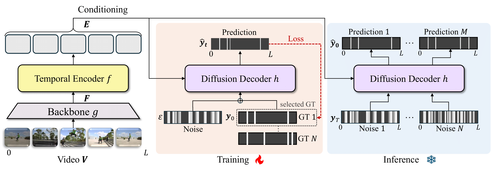
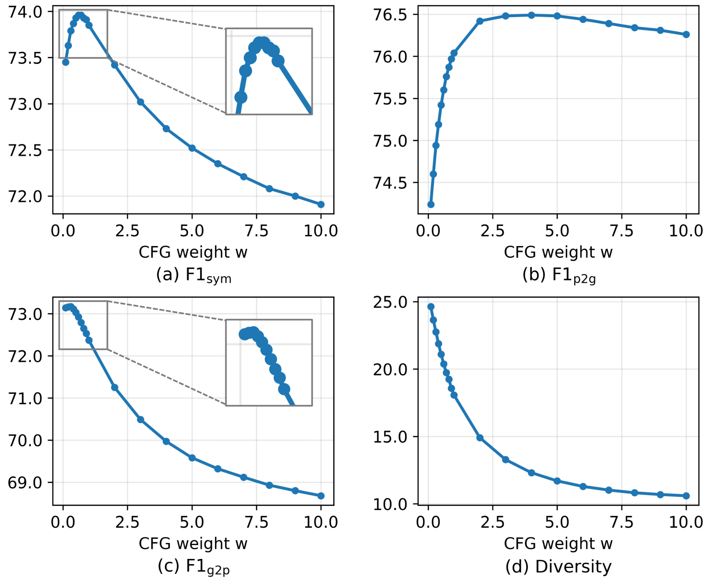
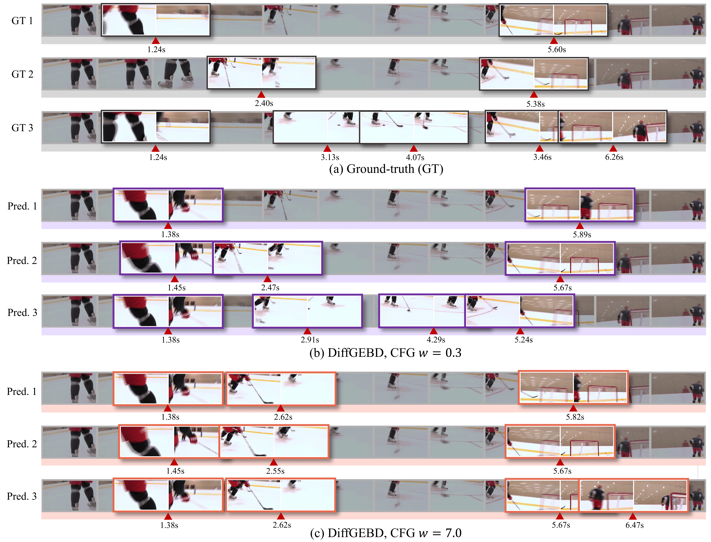

Diversity-aware Evaluation
| Method | F1sym | F1p2g | F1g2p | Diversity |
|---|---|---|---|---|
| Temporal Perceiver | 69.4 | 72.2 | 67.4 | 14.6 |
| SC-Transformer | 72.9 | 74.9 | 71.6 | 18.9 |
| BasicGEBD | 72.2 | 74.5 | 70.6 | 18.6 |
| EfficientGEBD | 72.6 | 76.0 | 70.2 | 14.9 |
| DiffGEBD (ours) | 74.0 | 75.6 | 72.9 | 20.4 |
Generic event boundary detection (GEBD) aims to identify natural boundaries in a video, segmenting it into distinct and meaningful chunks. Despite the inherent subjectivity of event boundaries, previous methods have focused on deterministic predictions, overlooking the diversity of plausible solutions. In this paper, we introduce a novel diffusion-based boundary detection model, dubbed DiffGEBD, that tackles the problem of GEBD from a generative perspective. The proposed model encodes relevant changes across adjacent frames via temporal self-similarity and then iteratively decodes random noise into plausible event boundaries being conditioned on the encoded features. Classifier-free guidance allows the degree of diversity to be controlled in denoising diffusion. In addition, we introduce a new evaluation metric to assess the quality of predictions considering both diversity and fidelity. Experiments show that our method achieves strong performance on two standard benchmarks, Kinetics-GEBD and TAPOS, generating diverse and plausible event boundaries.

| Method | F1sym | F1p2g | F1g2p | Diversity |
|---|---|---|---|---|
| Temporal Perceiver | 69.4 | 72.2 | 67.4 | 14.6 |
| SC-Transformer | 72.9 | 74.9 | 71.6 | 18.9 |
| BasicGEBD | 72.2 | 74.5 | 70.6 | 18.6 |
| EfficientGEBD | 72.6 | 76.0 | 70.2 | 14.9 |
| DiffGEBD (ours) | 74.0 | 75.6 | 72.9 | 20.4 |
| Method | F1@0.05 | |
|---|---|---|
| Kinetics-GEBD | TAPOS | |
| BMN | 18.6 | - |
| BMN-StartEnd | 49.1 | - |
| ISBA | - | 10.6 |
| TCN | 58.8 | 23.7 |
| CTM | - | 24.4 |
| TransParser | - | 23.9 |
| PC | 62.5 | 52.2 |
| SBoCo | 73.2 | - |
| Temporal Perceiver | 74.8 | 55.2 |
| DDM-Net | 76.4 | 60.4 |
| CVRL | 74.3 | - |
| LCVS | 76.8 | - |
| SC-Transformer | 77.7 | 61.8 |
| BasicGEBD | 76.8 | 60.0 |
| EfficientGEBD | 78.3 | 63.1 |
| DyBDet | 79.6 | 62.5 |
| DiffGEBD (ours) | 78.4 | 65.8 |


@article{hwang2025generic,
title={Generic Event Boundary Detection via Denoising Diffusion},
author={Hwang, Jaejun and Gong, Dayoung and Kim, Manjin and Cho, Minsu},
journal={arXiv preprint arXiv:2508.12084},
year={2025}
}